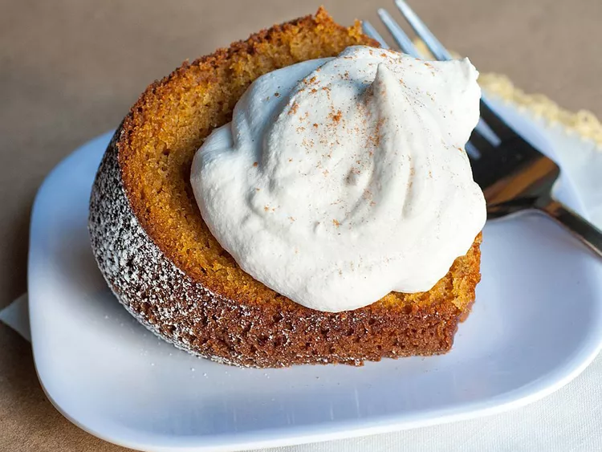

overview
- Mix the dry ingredients in one bowl and beat the wet ingredients in another.
- Beat the flour mixture into the wet mixture.
- Stir in the nuts (if using) and pour it into a prepared sheet pan.
- Bake until a toothpick comes out clean.
ingredients
- 2 cups all-purpose flour
- 3 teaspoons baking powder
- 2 teaspoons baking soda
- 2 teaspoons ground cinnamon
- ¼ teaspoon salt
- 2 cups white sugar
- 1 ¼ cups vegetable oil
- 2 cups canned pumpkin
- 1 teaspoon vanilla extract
- 4 large eggs
- 1 cup chopped walnuts (Optional)
-
Step 1
-
Preheat the oven to 350 degrees F (175 degrees C). Grease and flour a 12x18-inch sheet pan.
-
Step 2
-
Sift flour, baking powder, baking soda, cinnamon, and salt together in a large bowl; set aside.
-
Step 3
-
Beat sugar and oil together in a large bowl with an electric mixer until smooth.
-
Step 4
-
Blend in pumpkin and vanilla, then beat in eggs one at a time.
-
Step 5
-
Gradually beat in flour mixture until just combined.
-
Step 6
-
Stir in walnuts; spread batter into the prepared sheet pan.
-
Step 7
-
Bake in the preheated oven until a toothpick inserted into the center of the cake comes out clean, about 30
minutes. Allow to cool.